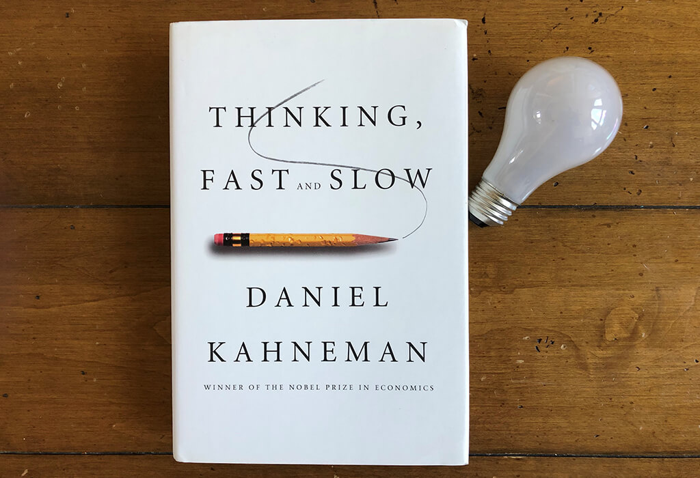
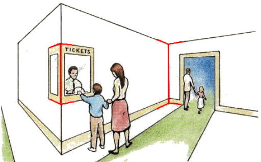
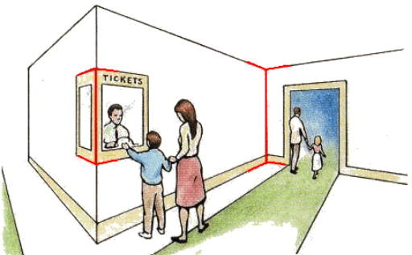

Estadística
Antifrágil
Nassim Taleb es un ensayista, matemático (estadística) y ex-trader, entre otras cosas, centra su trabajo en la
probalidad y el riesgo en el mundo real.
Pensar Rápido, Pensar Despacio

Daniel Kahneman nos presenta dos formas de pensar, un pensamiento rápido y un pensamiento despacio, en muchas ocaciones pensamos rápido cuando deberíamos estar pensando despacio, además de contarnos la teoría intenta mostrarnos problemas y hacernos pensar rápido, equivocarnos, problemas como los siguiente: ¿Cúal de las dos lineas rojas te parece más grande? Escoge una:  Mide las lineas y veras que miden lo mismo.
Otro problema interesante es el de Steve:
A lo largo del libro se tocan otros temas interesantes, además de ver otros problemas que intentarán confundirte y que pienses rápido, como por qué debemos usar algoritmos para tomar decisiones en lugar de la decisión humana o por qué padres muy altos tienen hijos más bajitos...
Daniel Kahneman nos presenta dos formas de pensar, un pensamiento rápido y un pensamiento despacio, en muchas ocaciones pensamos rápido cuando deberíamos estar pensando despacio, además de contarnos la teoría intenta mostrarnos problemas y hacernos pensar rápido, equivocarnos, problemas como los siguiente: ¿Cúal de las dos lineas rojas te parece más grande? Escoge una:  Mide las lineas y veras que miden lo mismo.
Otro problema interesante es el de Steve:
«Steve es muy tímido y retraído, siempre servicial, pero poco interesado por la gente o por el mundo real. De carácter disciplinado y metódico, necesita ordenarlo y organizarlo todo, y tiene obsesión por el detalle» . ¿Es más probable que Steve sea un bibliotecario o un agricultor?Para responder qué profesion es más probable lo primero que se nos viene a la mente es usar la personalidad de Steve (y se suele relacionar con la figura del bibliotecario), sin embargo muy poca gente piensa en datos estadístico ¿Cuantos Bibliotecarios hay en España? ~6000, y, ¿Cuántos agricultores? ~900000, por lo que podemos ver que es mucho más probable que sea agricultor...
A lo largo del libro se tocan otros temas interesantes, además de ver otros problemas que intentarán confundirte y que pienses rápido, como por qué debemos usar algoritmos para tomar decisiones en lugar de la decisión humana o por qué padres muy altos tienen hijos más bajitos...
The Lady Tasting Tea: How Statistics Revolutionized Science in the 20th Century
 Este libro es un gran acompañamiento a unas clases técnicas en en Estadística. ¿Quién era Ronald Fisher y por qué defendía el tabaco?, ¿Karl Pearson?,
¿Malas relaciones entre científicos? ¿Qué ocurría en la vida de estos grandes científicos mientras desarrollaban métodos multivariantes, test estadísticos y empezaban a darle forma al Diseño de Experimentos?
Este libro es un gran acompañamiento a unas clases técnicas en en Estadística. ¿Quién era Ronald Fisher y por qué defendía el tabaco?, ¿Karl Pearson?,
¿Malas relaciones entre científicos? ¿Qué ocurría en la vida de estos grandes científicos mientras desarrollaban métodos multivariantes, test estadísticos y empezaban a darle forma al Diseño de Experimentos?
StatQuest
Josh Starmer divulga sobre Estadística, Machine Learning y Ciencia de Datos, lo que nos
gusta de él es su enfoque en explicar de manera intuitiva y poco repetitiva. Se puede usar como un acompañamiento a unas clases en Estadística, las explicaciones de este canal
ayudan a entender conceptos de manera intuitiva...
Learning Bayesian Statistics
En este podcast se introduce a la Estadística Bayesina, cuenta con invitados en una gran cantidad de campos...